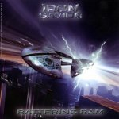

|
|
||
Iron Savior : Battering Ram (2004) |
|

http://www.iron-savior.de |
1. Battering Ram 4:47 |
9/10 |
|
El quinto disco del grupo alemán, más concretamente de Hamburgo, liderado por Piet Sielck, Iron Savior, se titula Battering Ram. Aunque todos los componentes del grupo actual son distintos a los originales, salvo Piet Sielck, su estilo se sigue manteniendo sobre las directrices trazadas en su primer álbum. "Battering Ram" es una gran apertura para el disco, rápido, potente, con ese estilo de power metal clásico con ciertos toques progresivos y atmósfera elaborada, cargada de coros, con la potente voz de Piet destacando encima de todo, y un solo de guitarra brillante y original. "Stand Against the King" está desarrollada alrededor del doble bombo, que crea un ritmo trepidante y sin respiro, y de una guitarra rítmica rápida y densa, donde la melodía, basada en la voz y adornada por algunos coros espectaculares, sobresale. Y con "Tyranny of Steel" se enlaza casi sin pausa otra pieza potente y veloz, que no cambia los elementos fundamentales, batería demoledora, voz clara pero agresiva y guitarra rítmica contundente. Y seguimos sin un respiro en "Time Will Tell", que aunque disminuye algo el tempo no baja ni un ápice la pegada de la batería ni de las guitarras, sin dejar por ello de ofrecer pasajes melodiosos, cambios de ritmo y un estribillo pegadizo. Dado el ritmo medio de este disco, creo que "Wings of Deliverance" se puede considerar sin duda un medio tiempo, variado, y con los omnipresentes coros dejando momentos brillantes sobre una base rítmica sólida adornada con algunos sintetizadores de estilo progresivo. "Break the Curse" es uno de esos temas que tienen "groove", que es ese ritmo muy marcado que define casi por si solo una canción, y que crea un irrefenable deseo de mover la cabeza al compás. Y otra vez aparece el demoledor doble bombo en "Riding Free", creando otra atronadora muestra de power metal sin concesiones. Los cambios de ritmo de "Starchaser", y el sencillo pero pegadizo estribillo, de esos para cantar a coro en los conciertos, definen una canción consistente, y que además cuenta con un cortante solo de guitarra. "Machine World" es un tema melódico que, sin ser una balada, rebaja la potencia mostrada hasta el momento, aunque en ningún caso resulta demasiado blando, y que tiene varias partes muy destacables. "Heavy Metal Powered Man" es el clásico himno al Heavy Metal, de letra superficial y previsible, y que en este caso suena bien, aunque no es ni mucho menos el mejor tema del álbum. Probablemente éste es el mejor disco de Iron Savior hasta la fecha. De lo que no tengo ningua duda es de que es un trabajo excepcional de power metal, muy por encima de la media y, eso sí, con el estilo característico de la banda, o más bien debería decir de Piet Sielck. |
||
- Crítica escrita por Rubén Béjar - |
||